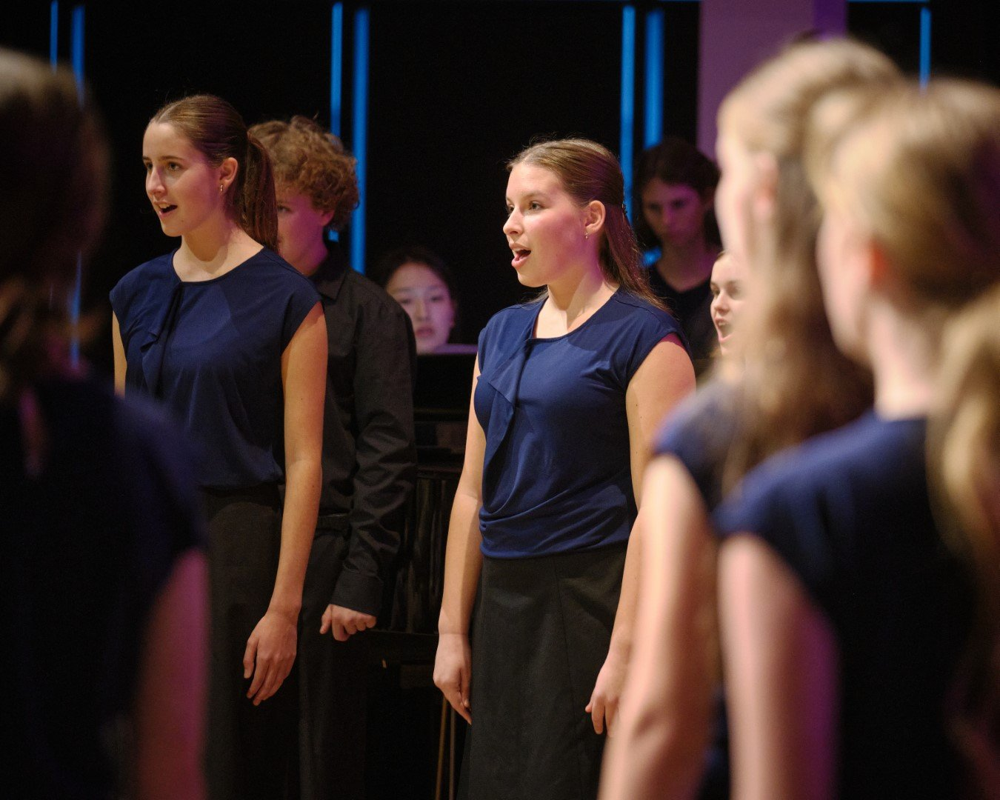
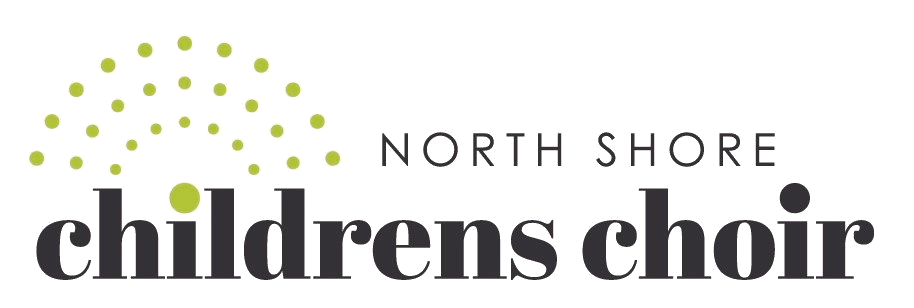
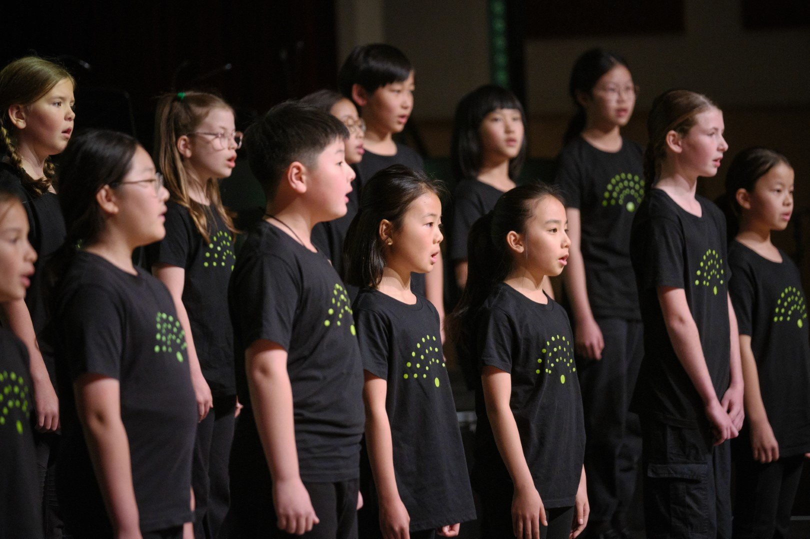
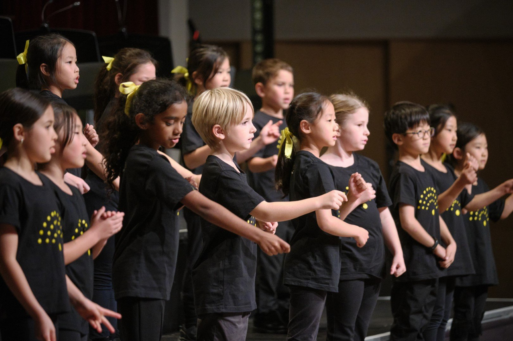

Here at NSYM we have a choir for all ages. Read on below for rehearsal times, fees and how to join each group.
Ages 5–8 (Years 0–4 at school)
In this exciting group, children sing together, learn aural and basic music skills, meet new friends and have fun. Weekly attendance is expected, and children graduate into the North Shore Children’s Choir when they reach Year 5.
There is no audition for Songsters — apply any time via the Application / Audition form.


No auditionAges 9–13 (Years 5–9 at school)
Formed in 2001 by Vanessa Kay, this has been one of Auckland's top children's choirs since its inception, performing at community events, Carols by Candlelight, and its own concerts. Highlights include recording for the Disney film Lilo & Stitch (2002), performing with the Auckland Philharmonia Orchestra, and appearing in the Civic Theatre's Titanic Live in 2018. Since 2010 the choir has toured a different New Zealand city each year, including Hamilton, Rotorua, Wellington and Whangamata.
Rehearsals mix sectionals, voice matching, singing and breathing technique, sight-singing and ensemble awareness. This is a non-auditioned, all-comers choir — there are no rehearsals during school holidays.

Ages 11–17+ (Year 7 and above)
NSYM's premier choral ensemble, formed in 2017. Con Brio has toured Melbourne, Hobart, Christchurch, Timaru, Dunedin, Invercargill and Queenstown, with a 2025 tour to Nelson, Kaikoura and Hanmer Springs alongside corporate and community performances.
Members are expected to be taking singing lessons through the year and to attend all rehearsals and concerts. There are no rehearsals during school holidays.
